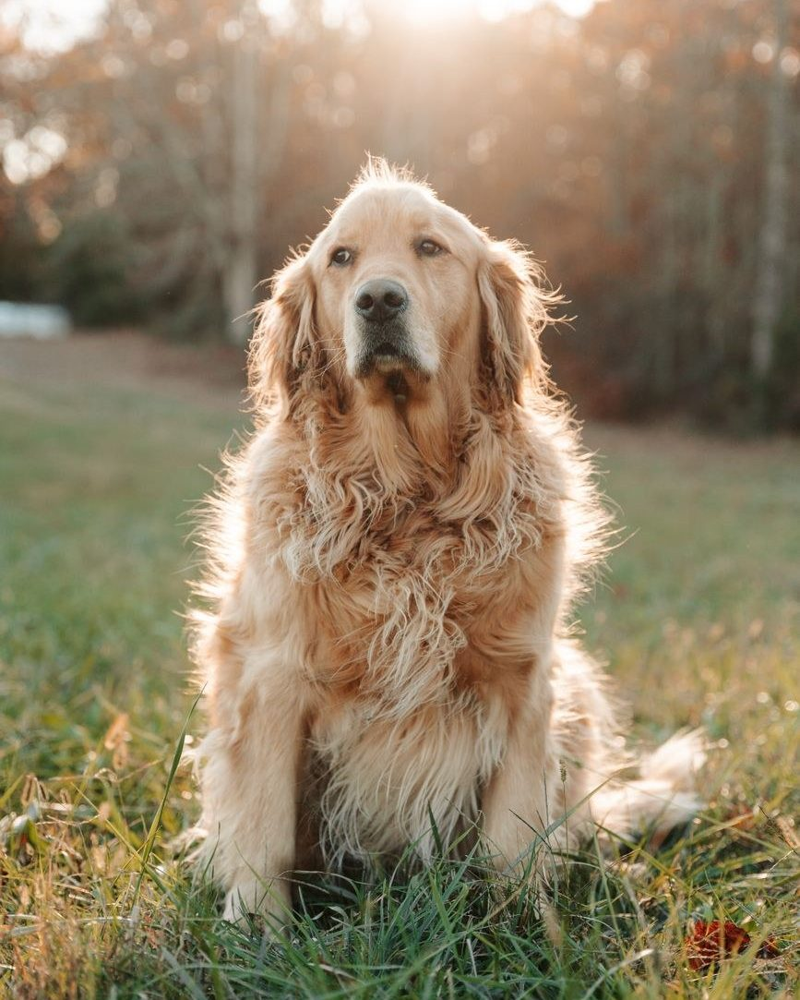
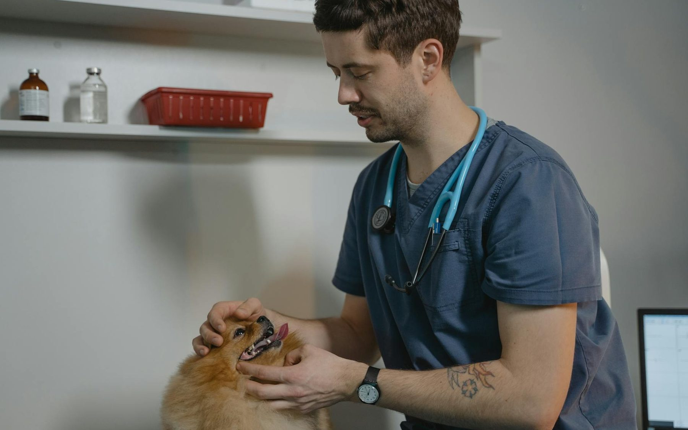
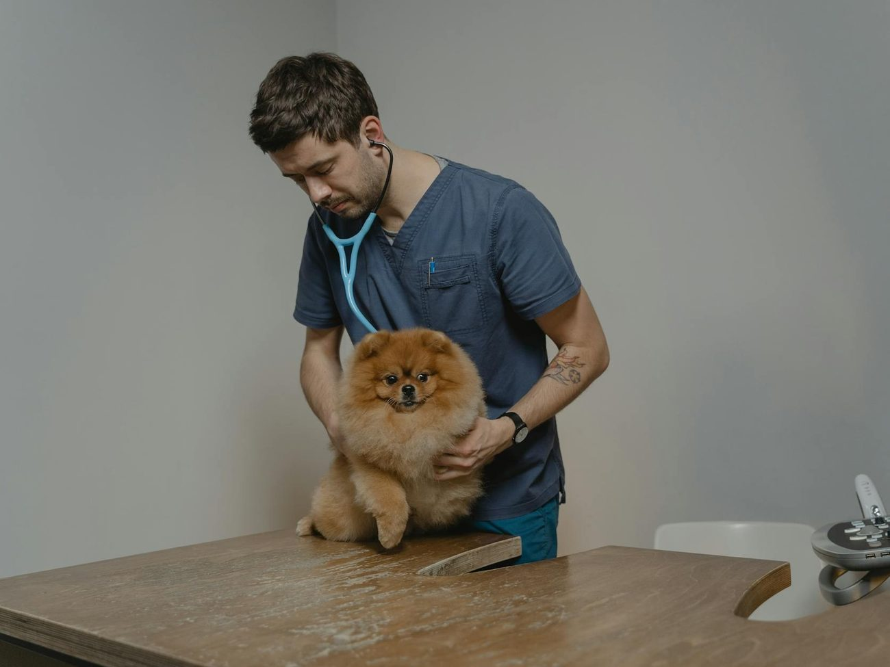
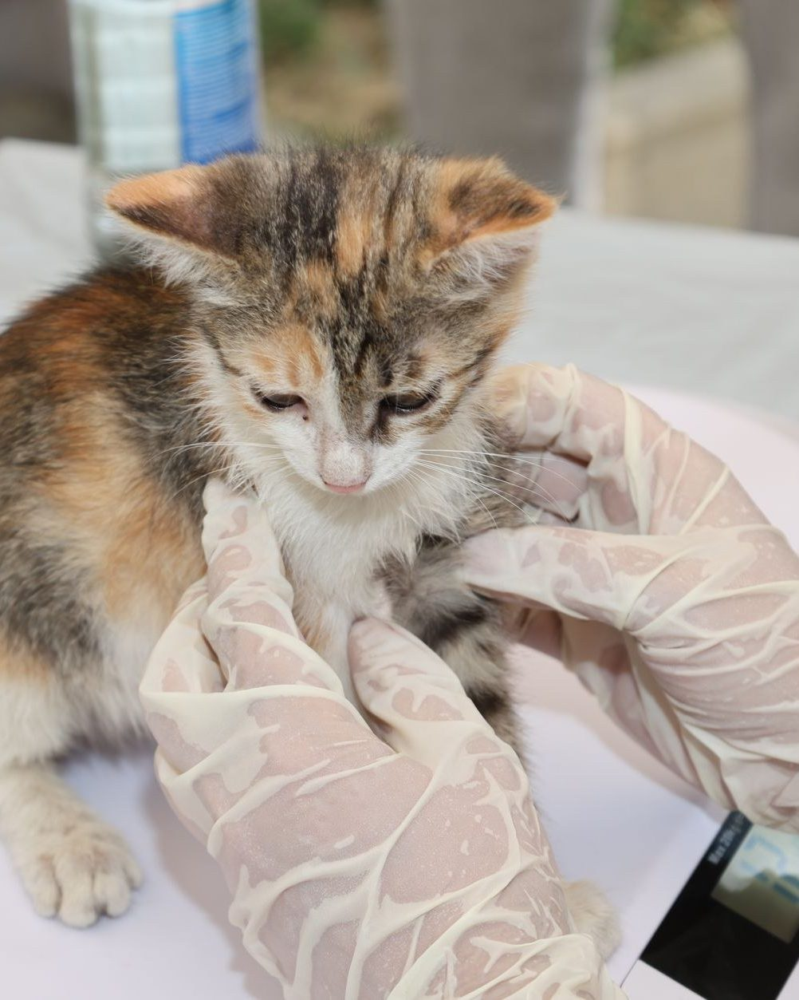
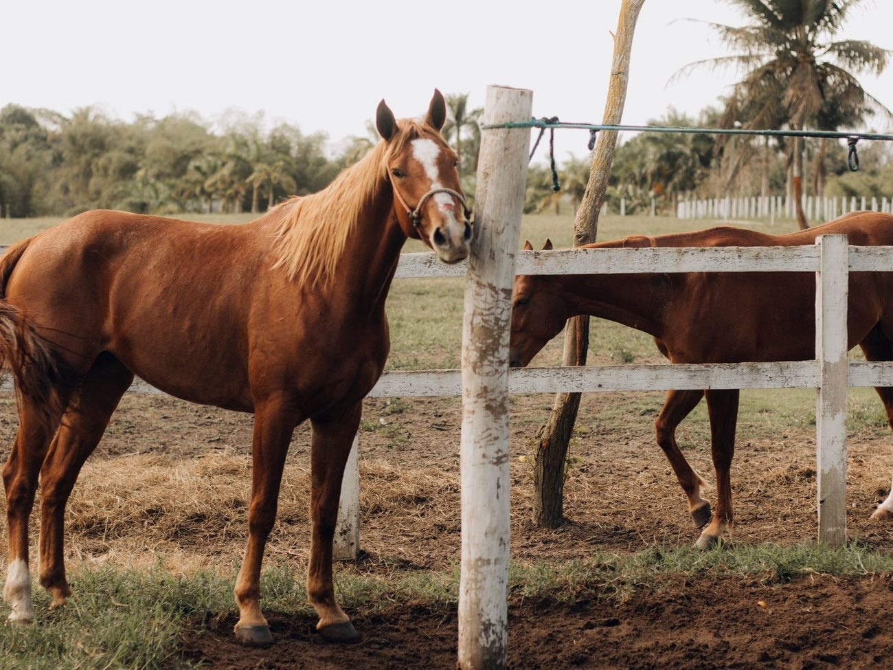
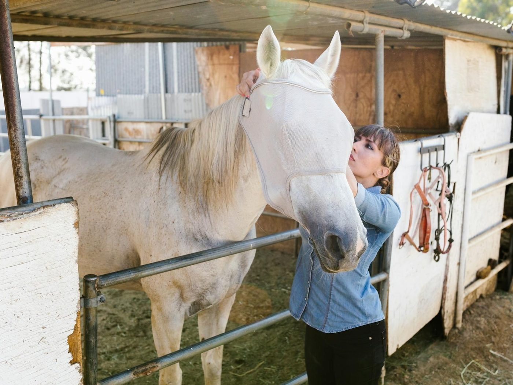
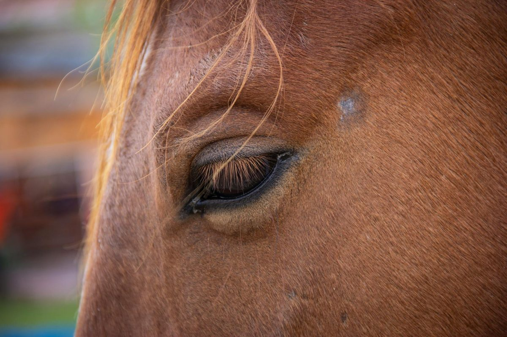
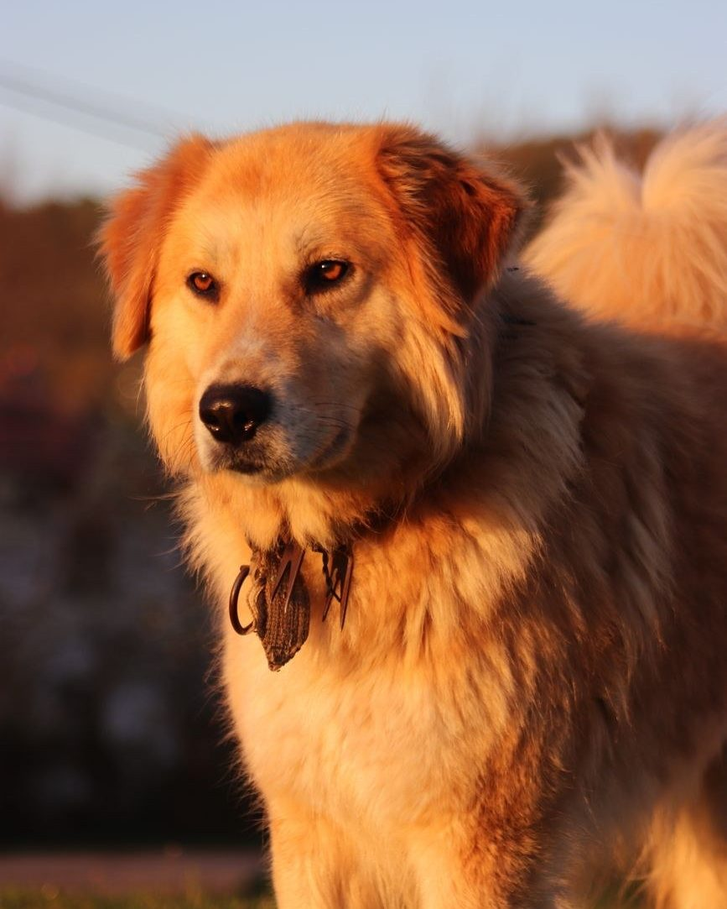
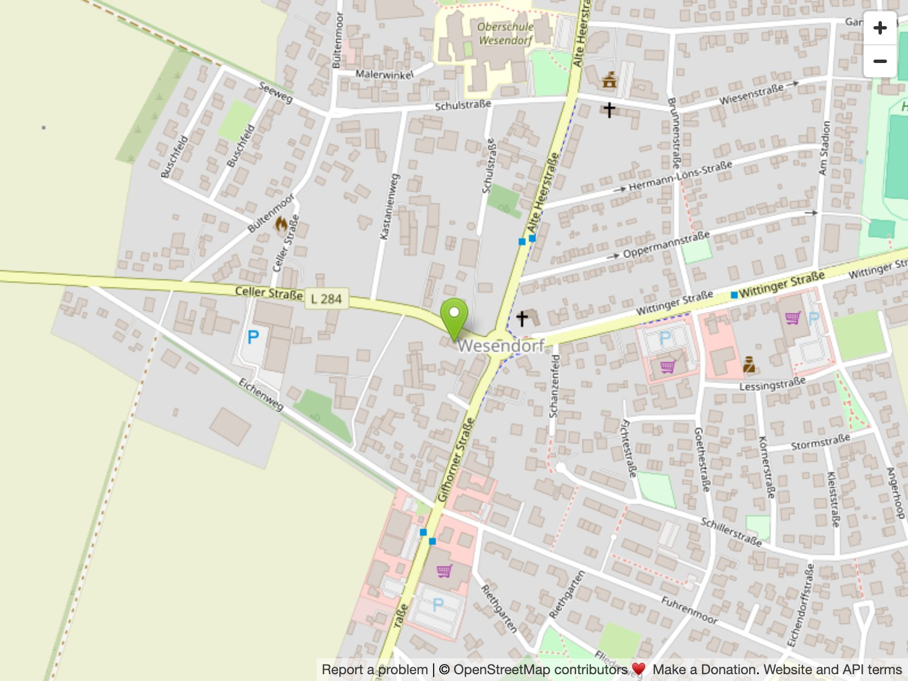

Hunde
Vorsorge, Diagnostik und Chirurgie — von der Impfung bis zur Kreuzband-OP.

Kleintiere & Pferde · Wesendorf und Wittingen
Tiermedizin mit Ruhe, Zeit und Herz — von der Katze bis zum Pferd. Inhaberin Nerina Bellinato behandelt seit 2012 in Wesendorf, seit 2014 auch in Wittingen.
Worauf es uns ankommt
Wir nehmen uns Zeit für jede Untersuchung — und für Ihre Fragen. Kurze Wege auf dem Land, moderne Diagnostik unter einem Dach und ein Team, das Kleintiere wie Pferde gleichermaßen kennt.
Hund, Katze, Heimtier oder Pferd — eine Ärztin für alle Vierbeiner der Familie.
In Wesendorf und in Wittingen — wohnortnah im Landkreis Gifhorn.
Digitales Röntgen, Ultraschall, EKG, Labor und ein eigener Operationsraum.
Feste Sprechzeiten und Notfälle nach Absprache — ein Anruf genügt.

Nerina Bellinato · Tierärztin & Inhaberin
Die gebürtige Wittingerin studierte nach einer Ausbildung Tiermedizin an der Tierärztlichen Hochschule Hannover. Nach der Approbation arbeitete sie mehrere Jahre in einer Gemischtpraxis im Wendland und wechselte danach an eine Pferde- und Kleintierklinik in Schleswig-Holstein.
Seit Januar 2012 führt sie die Tierarztpraxis in Wesendorf, seit 2014 auch die Zweitpraxis in Wittingen. Ihre besonderen Schwerpunkte liegen in der Zahnheilkunde und der Chirurgie — sowie in der Kolikdiagnostik und Behandlung von Pferden.
Leistungen
In Wesendorf steht das volle diagnostische und chirurgische Spektrum zur Verfügung, in Wittingen die laufende Sprechstunde mit moderner Diagnostik. Größere Eingriffe führen wir im eigenen Operationsraum in Wesendorf durch.
Strahlungsarme Aufnahmen mit sofortiger Befundung.
Hochmodernes digitales Gerät für Bauch- und Beckenorgane.
Abklärung von Herzrhythmus und Herzfunktion.
Blut- und Laborwerte als Grundlage jeder Therapie.
Weichteil- und Knochenchirurgie im eigenen OP-Raum.
Schonende, gut steuerbare Narkose mit Überwachung.
Eigene Zahneinheit — von der Reinigung bis zur Sanierung.
Orthopädische Eingriffe, z. B. am Kniegelenk.
Individuell abgestimmter Impfschutz für jedes Tier.
Abklärung chronischer Hauterkrankungen, sanfte Therapien.
Das richtige Futter für Alter, Rasse und Gesundheit.
Kaninchen, Meerschweinchen & Co. — Spezialwissen für Kleine.
Für wen wir da sind
Drei Welten, ein Anspruch: ruhige, gründliche Behandlung. In Wesendorf mit vollem Gerätespektrum, in Wittingen mit moderner Diagnostik und Sprechstunde.

Vorsorge, Diagnostik und Chirurgie — von der Impfung bis zur Kreuzband-OP.

Ruhige Sprechstunde für sensible Patienten — Katzen, Kaninchen, Nager.

Mobile und stationäre Versorgung — Schwerpunkt Kolikdiagnostik & Behandlung.

Schwerpunkt Pferd
Anders als die meisten Kleintierpraxen behandeln wir auch Pferde. Inhaberin Nerina Bellinato bringt aus ihrer Zeit an einer Pferde- und Kleintierklinik überdurchschnittliche Erfahrung mit — besonders in der Diagnostik und Behandlung von Koliken.
Von der routinemäßigen Untersuchung bis zur akuten Versorgung: Wir nehmen uns die Zeit, die ein Pferd und sein Mensch in einer solchen Situation brauchen.
„Das Tier steht für uns immer im Vordergrund."Tierarztpraxis Bellinato
Einblicke


Zwei Praxen, ein Team
Adresse, Sprechzeiten, Telefon und Anfahrt für unsere Hauptpraxis in Wesendorf — mit dem vollen chirurgischen Spektrum und eigenem Operationsraum.
Adresse, Sprechzeiten, Telefon und Anfahrt für unsere Zweitpraxis in Wittingen — laufende Sprechstunde mit moderner Diagnostik; größere Eingriffe erfolgen im OP in Wesendorf.

Auf OpenStreetMap öffnenPreise & Gebühren
Jede tierärztliche Leistung unterliegt der Gebührenordnung für Tierärzte. Sie legt für jede Tätigkeit einen Rahmen fest, an den sich jeder Tierarzt halten muss.
Wir berechnen im Normalfall den 1,2-fachen Satz und gestalten die Preise nicht willkürlich. Für größere Behandlungen erstellen wir Ihnen gern vorab einen Kostenvoranschlag — sprechen Sie uns einfach an, wir beraten Sie offen.
Termin & Kontakt
Termine vergeben wir nach Vereinbarung — so haben wir Zeit für Ihr Tier und müssen Sie nicht warten lassen. Rufen Sie uns einfach in Ihrer Praxis an.
Bei Notfällen außerhalb der Sprechzeiten wenden Sie sich bitte telefonisch an uns — wir besprechen das weitere Vorgehen direkt.